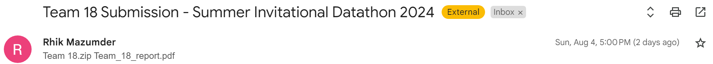

Citadel Datathon
August 6, 2024
We got 2nd at Citadel's Correlation One and Citadel Securities Summer Invitational Datathon!
This was my first datathon, and it was quite a wild experience. Although the problem statement and datasets were released on Monday morning, we didn’t finalize our ideas until Friday—ironically, the first idea I had. We had team members in three different time zones (EST, PST, and SGT), so we mostly worked together between 3-4 AM EST (goodbye, sleep!).
All my teammates had full-time internships, while I was juggling two concurrent research projects. The day before the submission, I spent the evening partying with friends and ended up working until 5 AM. I then woke up at 9 AM and worked straight through to the 5 PM submission deadline. My heart nearly stopped until we received the confirmation receipt!

Overall, it was completely worth it though. That being said I took a couple key lessons from this experience:
- Keep it simple. We took so long to finalize a project, since we kept on trying to incorporate advanced techniques, instead of just identifying basic patterns and branching from there.
- Don't overdo it. We initally aimed to create a 15 page report, but couldn't gauge how much content was required and ended creating our 24 page monstrosity.
- Use your team's strengths. We leveraged the unique backgrounds of each team member to develop the best parts of the paper. The pairs trading algorithm, developed from Pi Rey (The GOAT)'s quant internship, was undoubtedly the crown jewel of our report.
Thanks to Pi Rey Low, Julia Huang and Peter Zheng for their contributions to this work, and I will aim for Gold next time!
Read more
I finally made my own website after much procrastination and am quite happy with the result. I might update this blog after major events or just forget about it.
This summer, I don't have a full-time internship at a startup or corporate program, which is a bit disappointing. The closest thing is my research with Dr. Arkopal Dutt at IBM. Although visiting the Cambridge IBM office once a week is cool, it doesn't feel like a full-time internship. That said, I've been staying busy.
I've been working on three projects this summer:
- Learning Discrete Graphical Models: I am working with Dr. Arkopal Dutt of IBM Cambridge to develop learning algorithms for discrete graphical models, requiring me to brush up on probability and study probabilistic graphical models. We're developing a Julia library for these novel methods and aim to publish a paper by December.
- SDP Formulations for Entanglement: Collaborating with Professors Javier Pena, Sridhar Tayur, and Dr. Vikesh Siddhu, I'm developing and testing SDP formulations for entanglement. This project involves a deep understanding of quantum entanglement and familiarity with SDP modeling software.
- Ship Rererouting Problem: I worked with Dr. Fei Li and intern Max Zhao on "Improved Classical and Quantum Algorithms for Shipment Rerouting Problems." This advanced my previous work on the Metric Traveling Salesman Problem. We've submitted the paper to ALENEX25 and hope for acceptance.
Outside of research, I'm working with Dr. Elias Towe, Rohan Jain, Ryan Wang, and Param Sehrawat to set up Quantum Computing @ CMU, practicing LeetCode, and applying to quant positions. For fun, I've been doing chess puzzles, binging shows, and spending time with my family.